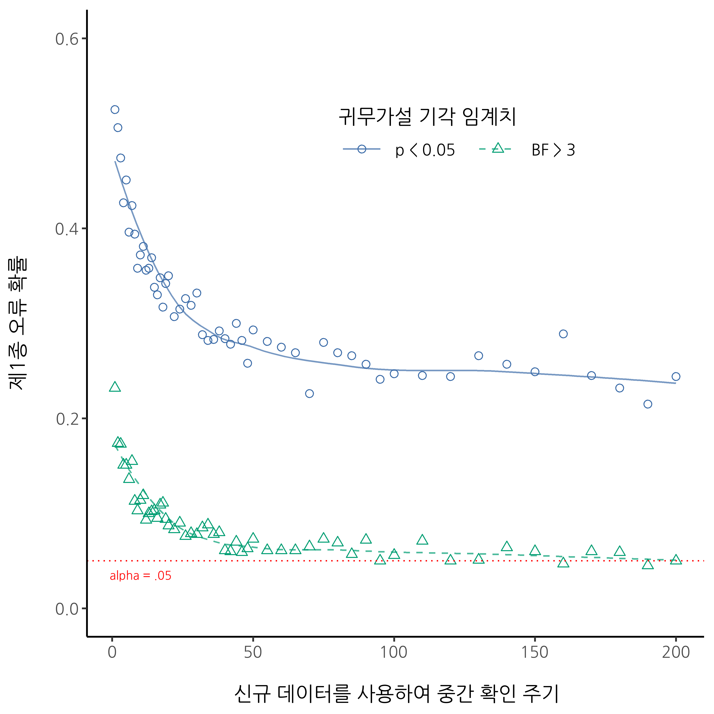
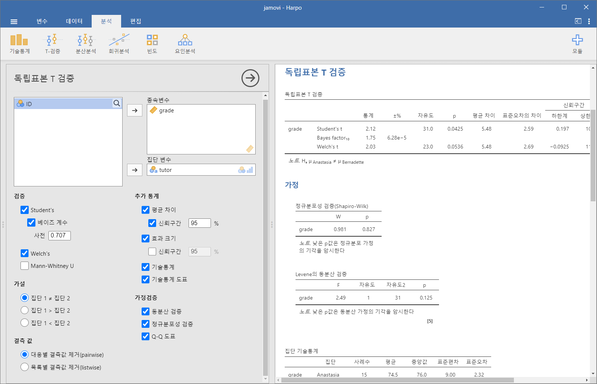
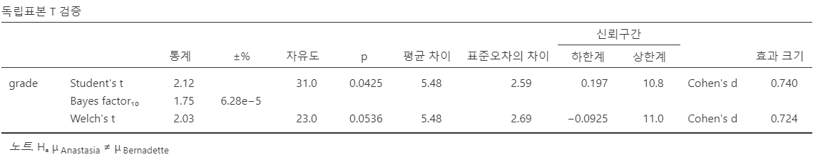
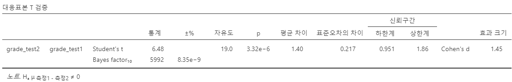
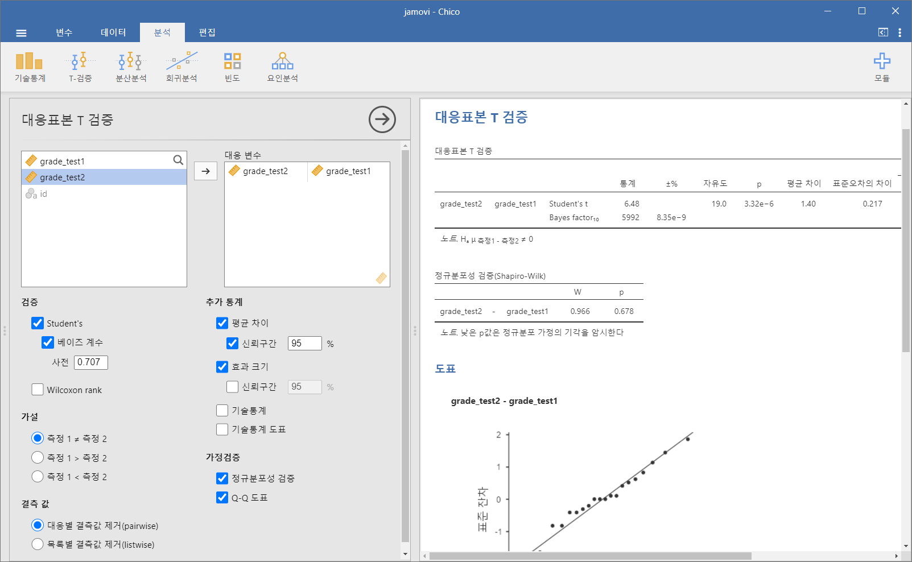

| 가설 | 신념의 정도 |
|---|---|
| 비 오는 날 | 0.15 |
| 건조한 날 | 0.85 |
16 베이지안 통계학
사실에 관한 우리의 추론에서는 가장 높은 확실성에서부터 가장 낮은 개연적 증거에 이르기까지 모든 가능한 정도의 확신이 존재합니다. 그러므로 현명한 사람은 증거에 비례하여 자신의 믿음을 조정합니다.
– 데이비드 흄1
이 책에서 여러분께 소개한 개념들은 빈도주의자 관점에서 추론 통계를 설명한 것입니다. 저만 이렇게 하는 것이 아닙니다. 사실, 학부 학생들에게 제공되는 거의 모든 교재는 빈도주의 통계학자의 견해를 추론 통계의 유일한 이론으로, 즉 유일한 올바른 방식인 것처럼 제시합니다. 저는 실용적인 이유로 이러한 방식으로 가르쳐 왔습니다. 20세기 동안 학문적 통계 분야에서는 빈도주의자 통계가 지배적이었으며, 응용 과학 분야에서는 그 지배력이 더욱 극단적이었습니다. 심리학자들 사이에서 빈도주의자 방법을 사용하는 것은 과거에도 그리고 현재에도 일반적인 실무 관행입니다. 빈도주의자 방법이 과학 논문에서 널리 사용되기 때문에, 통계를 배우는 모든 학생은 이러한 방법을 이해해야 합니다. 그렇지 않으면 논문에서 전달하는 내용을 이해할 수 없을 것입니다! 불행히도, 적어도 제 의견으로는, 심리학에서 현재의 실무 관행은 종종 잘못된 방향으로 나아가고 있는데, 빈도주의자 방법에 대한 의존이 그 원인 중 하나입니다. 이 장에서는 제가 그렇게 생각하는 이유를 설명하고, 정통적 접근법보다 일반적으로 우수하다고 생각하는 베이지안 통계에 대한 소개를 제공합니다.
이 장은 두 부분으로 구성됩니다. 처음 세 개의 절에서는 베이지안 통계의 개념을 다루는데, 베이지안 통계가 어떻게 작동하는지에 대한 기본적인 수학적 규칙과 이러한 접근법이 유용한 이유를 설명합니다. 이후에는 베이지안 \(t\)-검정을 수행하는 방법에 대한 간략한 개요를 제공합니다.
16.1 합리적 행위자의 확률적 추론
베이지안 관점에서 통계적 추론은 전적으로 신념 수정과 관련되어 있습니다. 저는 세계에 대한 후보 가설들의 집합 \(h\)로 시작합니다. 저는 이 가설들 중 어느 것이 참인지 알지 못하지만, 어떤 가설이 그럴듯한지에 대한 신념을 가지고 있습니다. 데이터 \(d\)를 관찰하면, 저는 이러한 신념을 수정해야 합니다. 데이터가 가설과 일치하면, 해당 가설에 대한 신념이 강화됩니다. 데이터가 가설과 일치하지 않으면, 해당 가설에 대한 신념이 약화됩니다. 그것이 전부입니다! 이 절의 마지막 부분에서 베이지안 추론이 어떻게 작동하는지에 대한 정확한 설명을 제공할 것이지만, 먼저 핵심 개념을 소개하기 위해 간단한 예제를 살펴보겠습니다. 다음과 같은 추론 문제를 고려해 봅시다.
저는 현재 우산을 가지고 있습니다. 여러분은 비가 올 거라 생각하십니까?
이 문제에서 저는 여러분께 단 하나의 데이터만 제시했습니다 (\(d\) = 저는 현재 우산을 들고 있습니다), 그리고 여러분께 비가 올 것인지에 대한 신념 또는 가설을 말해 달라고 요청했습니다. 여러분은 두 가지 대안을 가지고 있습니다, \(h\): 오늘 비가 올 것이다 또는 그렇지 않을 것이다. 이 문제를 어떻게 해결해야 할까요?
16.1.1 사전 확률: 당신이 이전에 믿었던 것
첫 번째로 해야 할 일은 제가 우산에 대해 말한 내용을 무시하고, 비에 대한 여러분의 기존 신념을 기록하는 것입니다. 이것은 매우 중요합니다. 새로운 증거(데이터)를 바탕으로 신념이 어떻게 수정되었는지 솔직하게 평가하려면, 해당 데이터가 등장하기 전에 무엇을 믿고 있었는지에 대해 언급해야 합니다! 그렇다면 오늘 비가 올 것인지에 대해 여러분은 무엇을 믿고 있었을까요? 여러분은 아마도 제가 호주에 살고 있으며, 호주의 많은 지역이 덥고 건조하다는 것을 알고 있을 것입니다. 제가 살고 있는 애들레이드시는 지중해성 기후를 가지고 있으며, 이는 남부 캘리포니아나 남유럽 또는 북아프리카와 매우 유사합니다. 저는 이 글을 1월에 쓰고 있으므로, 지금이 한여름이라는 것을 가정할 수 있습니다. 실제로, 여러분은 위키피디아2를 빠르게 검색하여 애들레이드가 1월 31일 중 평균적으로 4.4일 동안 비가 온다는 사실을 발견했을 수도 있습니다. 다른 정보를 모르더라도, 여러분은 애들레이드에서 1월에 비가 올 확률이 약 15%이고, 건조한 날일 확률이 85%라고 결론지을 수 있습니다(표 16.1 참조). 만약 이것이 여러분이 애들레이드 강우량에 대해 실제로 믿고 있는 바라면 (그리고 제가 이를 여러분께 말해주었으므로 이제는 여러분도 그렇게 믿을 가능성이 높습니다), 여기서 제가 기술한 것이 여러분의 사전 분포(prior distribution), 즉 \(P(h)\)로 표현되는 것입니다.
16.1.2 가능도: 데이터 발생에 대한 이론
추론 문제를 해결하려면 제 행동 패턴에 대한 이론이 필요합니다. 다니엘은 언제 우산을 가지고 다닐까요? 여러분은 제가 완전히 멍청하지 않으며,3 비 오는 날에만 우산을 들고 다니려고 노력한다고 추측할 수도 있습니다. 하지만, 여러분은 또한 제가 어린아이들을 키우고 있으며, 이런 종류의 일을 꽤 자주 깜빡 잊는다는 사실도 알고 있습니다. 가령, 비 오는 날에는 제가 우산을 기억할 확률이 약 30%라고 가정해 보겠습니다 (정말로 저는 이 부분에서 형편없습니다). 하지만, 맑은 날에는 제가 우산을 가지고 있을 확률이 약 5%라고 합시다. 따라서, 여러분은 이를 표 16.2 같이 정리할 수 있습니다.
| 데이터 | 데이터 | |
|---|---|---|
| 가설 | 우산 있음 | 우산 없음 |
| 비 오는 날 | 0.30 | 0.70 |
| 건조한 날 | 0.05 | 0.95 |
이 표의 각 셀은 특정 가설 \(h\)가 참일 경우, 어떤 데이터 \(d\)가 관찰될 것인지에 대한 여러분의 신념을 설명하는 것입니다. 이러한 신념을 “조건부 확률”이라 하고, \(P(d|h)\)로 표현하며, “가설 \(h\)인 경우 데이터 \(d\)의 확률”이라고 할 수 있습니다. 베이지안 통계에서 가설 \(h\)인 경우의 데이터 \(d\)의 가능도(likelihood)라고 합니다.4
16.1.3 데이터와 가설의 결합 확률
이제 모든 요소가 준비되었습니다. 사전 확률과 가능도를 작성했으므로, 베이지안 추론을 수행하는 데 필요한 모든 정보를 갖추었습니다. 이제 문제는 이 정보를 어떻게 활용하느냐입니다. 이를 위해 사용할 수 있는 매우 간단한 방정식이 있지만, 왜 이 방정식을 사용하는지 이해하는 것이 중요하므로 기본 개념부터 차근차근 설명하겠습니다.
확률 이론의 한 가지 규칙부터 시작해 보겠습니다. 이 규칙은 표 7.1 에서 이미 언급했지만, 당시에는 강조하지 않았기 때문에 아마도 그냥 지나쳤을 것입니다. 이 규칙은 두 가지 사실이 동시에 참일 확률에 대한 것입니다. 예를 들어, 오늘이 비 오는 날(즉, 가설 \(h\)가 참임)이고 제가 우산을 가지고 있는 경우(즉, 데이터 \(d\)가 관찰됨)의 확률을 계산하고 싶을 수 있습니다. 가설과 데이터의 결합 확률(joint probability)은 \(P(d,h)\)로 표현되며, 사전 확률 \(P(h)\)과 가능도 \(P(d|h)\)를 곱하여 계산할 수 있습니다. 수식으로 표현하면 다음과 같습니다: \[P(d,h)=P(d|h)P(h)\]
그렇다면, 오늘이 비 오는 날이며 제가 우산을 가지고 있을 확률은 얼마일까요? 앞서 논의한 대로, 사전 확률에 따르면 비 오는 날일 확률은 15%이고, 가능도에 따르면 제가 비 오는 날 우산을 기억할 확률은 30%입니다. 따라서 두 확률을 곱하여 다음과 같이 계산할 수 있습니다: \[ \begin{split} P(비, 우산) & = P(우산|비) \times P(비) \\ & = 0.30 \times 0.15 \\ & = 0.045 \end{split} \]
다시 말해, 실제 무슨 일이 일어났는지에 대한 정보를 듣기 전에는 오늘 비가 오고 제가 우산을 가지고 있을 확률이 4.5%라고 생각할 수 있습니다. 그리고 실제로는 네 가지 가능한 상황이 존재합니다. 동일한 과정을 모든 경우에 대해 반복하면 표 16.3 같은 결과를 얻을 수 있습니다.
| 우산 있음 | 우산 없음 | |
|---|---|---|
| 비 옴 | 0.045 | 0.105 |
| 건조함 | 0.0425 | 0.807 |
이 표는 네 가지 가능성 각각에 대한 정보를 포함하고 있습니다. 그러나 전체 그림을 완전히 이해하려면 행과 열의 합계를 추가하는 것이 도움이 됩니다. 그 결과는 표 16.4 같습니다.
| 우산 있음 | 우산 없음 | 합계 | |
|---|---|---|---|
| 비 옴 | 0.045 | 0.105 | 0.15 |
| 건조함 | 0.0425 | 0.807 | 0.85 |
| 합계 | 0.0875 | 0.912 | 1 |
이 표는 매우 유용하므로, 각 숫자가 의미하는 바를 이해하는 것이 중요합니다. 먼저, 행 합계는 새로운 정보를 제공하지 않는다는 점을 주목해야 합니다. 예를 들어, 첫 번째 행은 우산을 가지고 있는지를 고려하지 않을 때 오늘 비가 올 확률이 15%임을 보여줍니다. 이는 당연한 결과입니다. 왜냐하면, 우리가 설정한 사전 확률이기 때문입니다.5 여기서 중요한 것은 숫자 자체가 아니라, 우리의 계산이 타당하다는 점을 확인할 수 있다는 것입니다! 이제 열 합계를 살펴보면 우리가 명확하게 언급하지 않았던 추가 정보를 제공합니다. 행 합계가 비가 올 확률을 알려주는 것과 마찬가지로, 열 합계는 제가 우산을 가지고 있을 확률을 나타냅니다. 예를 들어, 첫 번째 열은 (비오는 날일지 아닐지를 무시하고) 제가 우산을 가지고 있을 확률이 평균적으로 8.75%임을 보여줍니다. 마지막으로, 네 가지 가능한 사건을 모두 합하면 총합이 1이 됩니다. 즉, 우리가 작성한 것은 데이터와 가설의 모든 가능한 조합에 대해 정의된 올바른 확률 분포입니다.
이 표가 매우 유용하기 때문에, 표의 각 요소가 어떤 개념에 해당하며 어떻게 표현되는지 확실히 이해하도록 하겠습니다(표 16.5).
| 우산 있음 | 우산 없음 | ||
|---|---|---|---|
| 비 옴 | P(우산 있음, 비 옴) | P(우산 없음, 비 옴) | P(비 옴) |
| 건조함 | P(우산 있음, 건조함) | P(우산 없음, 건조함) | P(건조함) |
| P(우산 있음) | P(우산 없음) |
마지막으로, “적절한” 통계 표기법을 사용해 보겠습니다. 비 오는 날 문제에서 데이터는 제가 우산을 가지고 있는지 여부에 해당합니다. 그러므로 \(d_1\)이 제가 우산을 가지고 있는 것을 관찰하는 사건이라 하고, \(d_2\)는 제가 우산을 가지고 있지 않은 사건이라 합시다. 마찬가지로, \(h_1\)은 오늘 비가 온다는 가설이라 하고, \(h_2\)는 비가 오지 않는다는 가설이라 합시다. 이러한 표기법을 사용하면 표는 표 16.6 같은 형태가 됩니다.
| \( d_1 \) | \( d_2 \) | ||
|---|---|---|---|
| \( h_1 \) | \(P(h_1, d_1)\) | \(P(h_1, d_2)\) | \( P(h_1) \) |
| \( h_2 \) | \(P(h_2, d_1)\) | \(P(h_2, d_2)\) | \( P(h_2) \) |
| \( P(d_1) \) | \( P(d_2) \) |
16.1.4 베이즈 규칙을 이용한 신념 업데이트
지난 절에서 정리한 표는 비 오는 날 문제를 해결하는 데 매우 강력한 도구입니다. 왜냐하면 이 표는 네 가지 논리적 가능성을 모두 고려하고 있으며, 데이터가 주어지기 전에 각각의 가능성을 당신이 얼마나 확신하는지를 정확히 나타내고 있기 때문입니다. 이제 실제로 데이터기 주어졌을 때 우리의 신념이 어떻게 변하는지를 고려해야 합니다. 비 오는 날 문제에서 여러분은 제가 실제로 우산을 가지고 있다는 사실을 알고 있습니다. 이는 다소 놀라운 사건입니다. 우리 표에 따르면 제가 우산을 가지고 있을 확률은 단 8.75%에 불과합니다. 하지만 이는 이해할 만한 일이죠? 여름날 더운 건조한 도시에서 여성이 우산을 들고 있는 것은 꽤 드문 일이므로, 여러분도 이를 예상하지 않았을 것입니다. 그럼에도 불구하고 데이터는 그것이 사실임을 알려줍니다. 아무리 가능성이 낮다고 생각했더라도 이제는 제가 우산을 가지고 있다는 사실을 반영하여 신념을 조정해야 합니다.6 이 새로운 정보를 반영하기 위해 수정된 표는 다음과 같은 값을 가져야 합니다. (참고: 표 16.7)
| 우산 있음 | 우산 없음 | |
|---|---|---|
| 비 옴 | 0 | |
| 건조함 | 0 | |
| 합계 | 1 | 0 |
다시 말해, 주어진 사실이 “우산 없음(No-umbrella)”의 모든 가능성을 제거하므로, 제가 우산을 가지고 있지 않음을 의미하는 표의 모든 칸에 0을 넣어야 합니다. 또한, 여러분은 제가 우산을 가지고 있다는 사실을 알고 있으므로, 왼쪽 열의 합이 1이 되어야 하며, 이는 \(P(우산) = 1\)을 정확하게 반영해야 합니다.
빈 칸에는 어떤 숫자를 넣어야 할까요? 다시 한 번, 수학적인 계산을 걱정하지 말고 직관적으로 생각해 봅시다. 처음 표를 작성했을 때, 두 칸의 값이 거의 동일했던 것을 기억하시나요? 우리는 “비와 우산”의 결합 확률이 4.5%, “건조한 날과 우산”의 결합 확률이 4.25%라는 것을 계산했습니다. 즉, 제가 실제로 우산을 가지고 있다고 말하기 전에, 여러분은 이 두 사건이 거의 동일한 확률을 가졌다고 생각했을 것입니다. 그리고 주어진 사실과 이 두 가능성은 모두 모순없이 양립됩니다. 그리고 이 두 가능성이 여전히 동일하게 그럴듯하다는 데 동의하실 겁니다. 따라서 최종 표에서 “비와 우산”이 “건조한 날과 우산”보다 약간 더 그럴듯하다는 사실을 유지하면서도, 표의 숫자 합이 1이 되도록 해야 합니다. 그럴려면 표 16.8 같은 형태가 될 것입니다.
| 우산 있음 | 우산 없음 | |
|---|---|---|
| 비 옴 | 0.514 | 0 |
| 건조함 | 0.486 | 0 |
| 합계 | 1 | 0 |
이 표가 말해주는 것은, 제가 우산을 가지고 있다는 사실을 알게 된 후 여러분은 오늘이 비 오는 날일 확률을 51.4%, 그렇지 않을 확률을 48.6%로 믿는다는 것입니다. 이것이 우리가 찾던 답입니다! 즉, 제가 우산을 가지고 있다는 사실을 고려한 사후 확률(posterior probability) \(P(h\|d)\)은 51.4%입니다.
이 숫자를 어떻게 계산했을까요? 아마도 예상하셨을 것입니다. “비”의 확률이 \(0.514\)임을 구하기 위해 저는 “비와 우산”의 결합 확률인 \(0.045\)를 “우산”의 확률인 \(0.0875\)로 나누었습니다. 이렇게 하면 전체 합이 1이 되도록 조정하면서도, 실제 데이터와 일치하는 두 사건의 상대적인 개연성을 손상하지 않는 표를 만들 수 있습니다. 이를 통계적 용어로 표현하면, 지금까지 수행한 것은 가설과 데이터의 결합 확률 \(P(d, h)\)을 주변 확률(marginal probability) \(P(d)\)로 나눈 것입니다. 이를 식으로 표현하면 다음과 같습니다.7 \[P(h|d)=\frac{P(d,h)}{P(d)}\]
하지만 지난 절에서 언급했듯이, 결합 확률 \(P(d, h)\)은 사전 확률 \(P(h)\)와 가능도 \(P(d|h)\)를 곱하여 계산됩니다. 실제로 우리가 알고 있는 값은 사전 확률과 가능도이므로, 이를 다시 식에 대입하면 사후 확률을 구하는 공식이 됩니다. \[P(h|d)=\frac{P(d|h)P(h)}{P(d)}\]
이 공식이 바로 베이즈 규칙입니다. 이는 학습자가 다양한 가설의 개연성에 대한 사전 신념을 가지고 시작하며, 데이터를 통해 그 신념을 어떻게 수정해야 하는지를 설명합니다. 베이즈 패러다임에서는 모든 통계적 추론이 이 단순한 규칙에서 비롯됩니다.
16.2 베이지안 가설 검정
장 9 에서 저는 정통적인 가설 검정 접근법을 설명하였습니다. 귀무가설 검정은 매우 복잡한 구조를 가지고 있으며, 사람들이 이해하기 어렵다고 느끼는 경우가 많기 때문에 이를 설명하는 데 한 개의 장이 필요했습니다. 반면, 베이즈 접근법을 이용한 가설 검정은 매우 간단합니다. 정통적 방법과 유사한 설정을 선택해 보겠습니다. 비교하고자 하는 두 개의 가설, 즉 귀무가설 \(h_0\)와 대립가설 \(h_1\)이 있습니다. 실험을 수행하기 전에 우리는 각 가설이 참일 확률에 대한 신념, 즉 \(P(h)\)을 가지고 있습니다. 실험을 실행하여 데이터 \(d\)를 획득합니다.
빈도주의자 통계학과는 달리, 베이지안 통계학에서는 귀무가설이 참일 확률에 대해 이야기할 수 있습니다. 더욱이, 귀무가설의 사후 확률을 베이즈 규칙을 사용하여 계산할 수 있습니다. \[P(h_0|d)=\frac{P(d|h_0)P(h_0)}{P(d)}\]
이 공식은 데이터를 \(d\) 관찰한 후 귀무가설에 대해 얼마나 신뢰해야 하는지를 정확히 알려줍니다. 마찬가지로, 본질적으로 동일한 공식을 사용하여 대립가설에 대한 신념도 계산할 수 있습니다. 단순히 첨자를 변경하면 됩니다. \[P(h_1|d)=\frac{P(d|h_1)P(h_1)}{P(d)}\]
이 모든 것이 너무 간단해서 굳이 이러한 공식을 적을 필요가 있을까 싶을 정도입니다. 왜냐하면 이전 절에서 설명한 베이즈 규칙을 그대로 복사한 것이기 때문입니다.8
16.2.1 베이즈 인자
실제 분석에서는 대부분의 베이지안 데이터 분석가들이 사후 확률 \(P(h_0|d)\)와 \(P(h_1|d)\)를 직접 논의하지 않습니다. 대신, 사후 승산비(posterior odds ratio)를 이야기하는 경우가 많습니다. 이를 내기에 비유해 봅시다. 예를 들어, 귀무가설의 사후 확률이 25%이고 대립가설의 사후 확률이 75%라면, 대립가설이 귀무가설보다 세 배 더 가능성이 높다고 할 수 있습니다. 즉, 대립가설에 유리한 승산은 3:1입니다. 수학적으로, 사후 승산을 계산하는 방법은 단순히 한 사후 확률을 다른 사후 확률로 나누는 것입니다. \[\frac{P(h_1|d)}{P(h_0|d)}=\frac{0.75}{0.25}=3\]
위의 공식을 일반적인 형태로 표현하면 다음과 같습니다. \[\frac{P(h_1|d)}{P(h_0|d)}=\frac{P(d|h_1)}{P(d|h_0)} \times \frac{P(h_1)}{P(h_0)}\]
이 공식은 세 가지 중요한 요소를 포함하고 있습니다. 좌변에는 사후 승산이 있으며, 이는 데이터를 관찰한 후 귀무가설과 대립가설의 상대적 개연성을 나타냅니다. 우변에는 사전 승산(prior odds)이 있으며, 이는 데이터를 관찰하기 전에 가졌던 신념을 나타냅니다. 가운데에 있는 값이 베이즈 인자(Bayes factor)이며, 이는 데이터가 제공하는 증거의 강도를 나타냅니다 (표 16.9).
| \(\frac{P(h_1|d)}{h_0|d}\) | \(=\) | \(\frac{P(d|h_1)}{d|h_0}\) | \(\times \) | \(\frac{P(h_1)}{h_0}\) |
|---|---|---|---|---|
| \(\Uparrow\) | \(\Uparrow\) | \(\Uparrow\) | ||
| 사후 승산비 | 베이즈 인자 | 사전 승산비 |
베이즈 인자(BF)는 베이즈 가설 검정에서 중요한 역할을 합니다. 이는 정통적 가설 검정에서 \(p\)-값이 수행하는 역할과 유사합니다. 베이즈 인자는 데이터가 제공하는 증거의 강도를 정량화하며, 따라서 베이즈 가설 검정을 수행할 때 일반적으로 보고하는 값이 됩니다.
사후 승산 대신 베이즈 인자를 보고하는 이유는 연구자마다 서로 다른 사전 신념을 가질 수 있기 때문입니다. 어떤 연구자는 귀무가설이 참일 가능성이 높다고 믿을 수 있고, 다른 연구자는 반대로 생각할 수도 있습니다. 이러한 이유로, 연구자는 베이즈 인자를 보고하는 것이 더 적절합니다. 독자가 연구 결과를 읽을 때 자신의 사전 승산을 베이즈 인자와 곱하여 자신만의 사후 승산을 계산할 수 있기 때문입니다. 귀무가설과 대립가설의 가능성이 동일하다고 가정하면, 사전 승산이 1이 되어 사후 승산은 베이즈 인자와 동일해집니다.
16.2.2 베이즈 인자 해석하기
베이즈 인자의 가장 좋은 점 중 하나는 숫자 자체가 본질적 의미를 갖는다는 것입니다. 실험을 수행하여 베이즈 인자를 계산했을 때 그 값이 4라면, 이는 데이터가 제공하는 증거가 대립가설에 대해 4:1의 확률로 내기를 걸었다는 의미입니다.
과학적 맥락에서 의미 있다고 여겨지는 증거의 기준을 정량화하려는 시도가 있었습니다. 가장 널리 사용되는 두 가지 기준은 Jeffreys (1961) 과 Kass & Raftery (1995) 의 것입니다. 두 가지 중에서 저는 Kass & Raftery (1995) 의 표를 선호하는데, 이 기준이 다소 보수적이기 때문입니다. 아래는 해당 표입니다(표 16.10).
| 베이즈 인자 | 해석 |
|---|---|
| 1 - 3 | 무시할 만한 증거 |
| 3-20 | 긍정적 증거 |
| 20-150 | 강한 증거 |
| > 150 | 매우 강한 증거 |
솔직히 말해서, 저는 Kass & Raftery (1995) 의 기준조차도 다소 관대하다고 생각합니다. 만약 저에게 결정권이 있다면 “긍정적 증거(Postive evidence)” 범주를 “약한 증거”로 명명했을 것입니다. 개인적으로 3:1에서 20:1 범위의 베이즈 인자는 기껏해야 “약한” 또는 “보통의” 증거라고 생각합니다. 그러나 이에 대한 절대적인 규칙은 없습니다. 강한 증거와 약한 증거를 구별하는 기준은 전적으로 얼마나 보수적인 입장을 취하느냐와 연구 공동체가 어떤 발견을 “사실”로 인정하기 위해 요구하는 기준에 따라 달라집니다.
어쨌든 위에 나열된 모든 숫자는 베이즈 인자가 1보다 클 때(즉, 증거가 대립가설을 지지할 때) 의미를 갖습니다. 그러나 베이즈 접근법이 정통적 접근법보다 좋은 실용적 장점 중 하나는 귀무가설을 지지하는 증거도 정량화할 수 있다는 것입니다. 이런 경우, 베이즈 인자는 1보다 작아집니다. 베이즈 인자가 1보다 작은 값을 보고할 수도 있지만, 저는 이것이 다소 혼란스럽다고 생각합니다. 예를 들어, 귀무가설 \(P(d|h_0)\) 하에서 데이터의 가능도가 0.2이고, 대립가설 \(P(d|h_1)\) 하에서 데이터의 가능도가 0.1이라고 가정해 봅시다. 위에서 제시한 공식을 사용하면, 베이즈 인자는 다음과 같이 계산됩니다. \[BF=\frac{P(d|h_1)}{P(d|h_0)}=\frac{0.1}{0.2}=0.5\]
이 결과를 그대로 해석하면, 대립가설을 지지하는 증거가 0.5 대 1이라는 의미입니다. 저는 이것이 직관적으로 이해하기 어렵다고 느낍니다. 오히려 이 공식을 “뒤집어”서 귀무가설을 지지하는 증거의 크기를 보고하는 것이 훨씬 이해하기 쉽다고 생각합니다. 즉, 다음과 같이 계산합니다. \[BF^{'}=\frac{P(d|h_0)}{P(d|h_1)}=\frac{0.2}{0.1}=2\]
그리고 우리가 보고하는 값은 귀무가설을 지지하는 2:1의 베이즈 인자입니다. 이렇게 하면 훨씬 더 직관적으로 이해할 수 있으며, 위의 표를 사용하여 해석할 수 있습니다.
16.3 왜 베이지안이 되어야 하는가?
지금까지 저는 베이지안 통계를 뒷받침하는 논리에만 집중해 왔습니다. 우리는 “확률을 신념의 정도로 본다”는 개념과 그것이 합리적인 행위자가 세상을 어떻게 추론해야 하는지를 의미하는 바에 대해 논의했습니다. 이제 여러분이 스스로 대답해야 할 질문은 다음과 같습니다. 통계를 어떤 방식으로 수행하고 싶으십니까? 표본 분포와 \(p\)-값에 의존하여 결정을 내리는 정통적 통계학자가 되고 싶으십니까? 아니면 사전 신념, 베이즈 요인 및 합리적인 신념 갱신 규칙을 사용하는 베이지안이 되고 싶으십니까? 솔직히 말씀드리면, 저는 이 질문에 대해 여러분을 대신하여 답할 수 없습니다. 궁극적으로 그것은 여러분이 옳다고 생각하는 것에 달려 있습니다. 선택은 전적으로 여러분의 몫입니다. 그렇기는 하지만, 제가 베이즈 접근법을 선호하는 이유에 대해 조금 이야기해 보겠습니다.
16.3.1 통계가 여러분이 생각하는 의미 그대로를 의미하는가
당신은 계속 그 단어를 사용하고 있지만, 저는 그것이 당신이 생각하는 의미라고 생각하지 않습니다.
– 이니고 몬토야, 프린세스 브라이드9
저에게 있어 베이지안 접근법의 가장 큰 장점 중 하나는 올바른 질문에 답을 한다는 점입니다. 베이지안 모형에서는 “어떤 가설이 참일 확률”을 언급하는 것이 완전히 타당하며 허용됩니다. 심지어 이 확률을 계산하려고 시도할 수도 있습니다. 궁극적으로, 우리가 원하는 것은 통계적 검정이 바로 이 정보를 제공하흔 것이 아닐까요? 실제 인간의 관점에서 보면, 통계를 수행하는 핵심 목적은 무엇이 참이고 무엇이 거짓인지를 결정하는 것입니다. 우리가 진실을 정확히 알지 못하는 경우에는, 확률 이론의 언어를 사용하여 “이론 A가 참일 확률은 80%이며, 이론 B가 참일 확률은 20%이다”라고 말해야 합니다.
이것은 인간적 관점에서는 너무나도 당연한 것처럼 보이지만, 정통적(빈도주의자) 통계학에서는 명백히 금지되어 있습니다. 빈도주의자에게 있어 이러한 진술은 무의미합니다. 왜냐하면 “어떤 이론이 참이다”라는 사건은 반복 가능한 사건이 아니기 때문입니다. 이론은 참이거나 거짓일 뿐이며, 아무리 그렇게 말하고 싶어도 확률적 진술은 허용되지 않습니다. 저는 섹션 9.5 에서 \(p\)-값을 귀무 가설이 참일 확률로 해석해서는 안 된다고 여러 번 경고한 바 있습니다. 거의 모든 통계학 교재에서 이 경고를 반복할 수밖에 없는 이유가 있습니다. 사람들은 간절히 이 해석이 맞기를 바라기 때문입니다. 빈도주의적 교리가 어떻든 간에, 학부생을 가르치고 데이터를 분석한 오랜 경험에 비추어 보면, 대부분의 사람들은 “어떤 가설이 참일 확률”을 의미 있는 것으로 간주하며, 그것이 우리에게 가장 중요한 정보라고 여깁니다. 이 개념은 너무나도 매력적이어서, 심지어 훈련받은 통계학자들조차도 \(p\)-값을 이러한 방식으로 해석하려는 실수를 저지릅니다. 예를 들어, 2013년의 공식 뉴스폴(Newspoll) 보고서에서 그들의 (빈도주의적) 데이터 분석을 해석하는 방법을 다음과 같이 설명하고 있습니다.10
이 보고서 전반에서, 관련된 부분에서 통계적으로 유의한 변화가 언급되었습니다. 모든 유의성 검정은 95% 신뢰 수준을 기준으로 수행되었습니다. 이는 어떤 변화가 통계적으로 유의하다고 기록되었을 경우, 해당 변화가 실제로 발생했을 확률이 95%이며, 단순히 우연한 변동에 의한 것이 아닐 가능성이 높다는 것을 의미합니다. (강조 저자 추가)
아닙니다! 이것은 \(p < .05\)의 의미가 아닙니다. 또한 빈도주의자 통계학에서 95% 신뢰 수준이 의미하는 바도 아닙니다. 강조된 문장은 명백히 잘못되었습니다. 정통적 방법론은 “실제 변화가 발생했을 확률이 95%”라는 진술을 할 수 없습니다. 왜냐하면 이는 빈도주의자 확률을 적용할 수 있는 유형의 사건이 아니기 때문입니다. 교조적인 빈도주의자라면 이 문장을 무의미하다고 여길 것입니다. 좀 더 실용적인 빈도주의자라고 하더라도, 이는 \(p\)-값에 대한 잘못된 정의라고 생각할 것입니다. 정통적 통계 도구를 사용한다면, 이런 표현은 허용되지 않으며 올바르지도 않습니다.
반면, 여러분이 베이지안이라고 가정해 보겠습니다. 강조된 문장은 \(p\)-값의 잘못된 정의이지만, 그것은 베이지안이 “대립 가설의 사후 확률이 95% 이상이다”라고 말할 때 의미하는 바와 거의 정확히 일치합니다. 그렇다면 이런 의문이 생깁니다. 만약 베이즈 사후 확률이 여러분이 실제로 보고하고 싶은 정보라면, 왜 굳이 정통적 방법을 사용하려고 하는 것입니까? 베이지안 주장을 하고 싶다면, 베이지안이 되어 베이지안 통계학 도구를 사용하면 될 것입니다.
저 자신을 예로 들자면, 베이지안 관점을 채택했을 때 가장 큰 해방감을 느꼈습니다. 일단 베이지안으로 전환하고 나면, 더 이상 직관적으로 이해하기 어려운 \(p\)-값의 정의를 외울 필요가 없습니다. 또한 “진짜 평균이 특정 구간 내에 있을 확률이 95%이다”라고 말할 수 없는 이유를 기억할 필요도 없습니다. 단지 연구를 수행하기 전에 무엇을 믿었는지 솔직하게 밝히고, 연구를 통해 무엇을 배웠는지를 보고하면 됩니다. 듣기만 해도 좋은 접근법 같지 않습니까? 저에게 있어 베이지안 접근법의 가장 큰 매력은 바로 이것입니다. 여러분이 정말로 수행하고 싶은 분석을 하고, 데이터가 실제로 말해 주는 바를 있는 그대로 표현할 수 있습니다.
16.3.2 믿을 수 있는 증거 기준
만약 \(p\) 값이 0.02 미만이라면, 귀무가설이 모든 사실을 설명하지 못한다는 것을 강하게 시사합니다. 우리는 0.05에서 관습적인 기준선을 긋고, 더 작은 \(p\) 값이 실질적인 차이를 나타낸다고 간주하더라도 큰 오류를 범하지 않을 것입니다.
– 로널드 피셔 경 (Fisher, 1925, p. 79)
위는 현대 통계학의 정설이 된 접근법을 창시한 인물 중 한 명인 로널드 피셔 경의 말입니다. \(p\)-값의 본래 기능에 대해 의견을 낼 자격이 있는 사람이 있다면, 바로 피셔일 것입니다. 이 인용문은 그의 고전적인 저서 Statistical Methods for Research Workers 에서 발췌된 것으로, \(p < .05\)일 때 귀무가설을 기각하는 것이 무엇을 의미하는지에 대해 비교적 명확하게 설명하고 있습니다.
피셔의 견해에 따르면, 우리가 \(p < .05\)를 “실제 효과가 존재한다”는 의미로 받아들인다면, “우리는 큰 오류를 범하지 않을 것”입니다. 이는 결코 특별한 의견이 아닙니다. 제가 경험한 바에 따르면, 대부분의 실무자는 피셔와 매우 유사한 입장을 가지고 있습니다. 본질적으로, \(p < .05\)라는 관행은 상당히 엄격한 증거 기준으로 간주됩니다.
과연 그럴까요? 이 질문을 탐구하는 한 가지 방법은 \(p\)-값을 베이즈 인자로 변환하여 비교하는 것입니다. 그러나 이는 쉬운 일이 아닙니다. 왜냐하면 \(p\)-값과 베이즈 인자는 근본적으로 다른 개념이며, 동일한 것을 측정하지 않기 때문입니다. 그럼에도 불구하고, 둘 사이의 관계를 분석하려는 시도가 몇 차례 있었습니다. 그 결과는 다소 놀라운 것이었습니다. 예를 들어, Johnson (2013) 은 (적어도 \(t\)-검정의 경우) \(p < .05\)라는 기준이 대략 3:1에서 5:1 정도의 베이즈 인자와 대응된다고 주장합니다.
만약 이 주장이 옳다면, 피셔의 말은 다소 과장된 것입니다. 귀무가설이 절반의 확률로 참이라고 가정할 경우(\(H_0\)의 사전 확률이 0.5), Johnson (2013) 의 데이터를 이용하여 \(p < .05\)에서 귀무가설을 기각한 후의 사후 확률을 계산해 보면, 기각했을 때 약 80% 확률로 올바른 결정을 내리게 됩니다. 하지만 제 개인적인 의견으로는, 의사 결정의 20%가 잘못될 수 있는 증거 기준은 충분히 엄격하지 않습니다. 피셔의 주장과는 달리, \(p < .05\)에서 기각하면 꽤 자주 틀릴 수 있습니다. 이는 결코 엄격한 증거 기준이 아닙니다.
16.3.3 \(p\)-값은 거짓입니다.
케이크는 거짓이다.
케이크는 거짓이다.
케이크는 거짓이다.
케이크는 거짓이다.
– 포털11
이쯤에서 여러분은 정통 통계학 자체가 문제가 아니라, 단순히 \(p < .05\)라는 기준이 문제라고 생각할 수도 있습니다. 어떤 의미에서는 맞는 말입니다. Johnson (2013) 이 제안하는 해결책은 “모든 사람이 이제부터 베이지안이 되어야 한다”가 아닙니다. 대신, 통계적 유의성을 판단하는 일반적인 기준을 \(p < .01\) 수준으로 강화하는 것이 더 현명하다는 것입니다. 이는 그리 무리한 주장은 아닙니다. 하지만 제 생각에는 이 문제는 단순히 기준값을 조정하는 것으로 해결될 수 있는 것보다 더 심각한 문제입니다. 저는 대부분의(모든 것은 아니지만) 전통적인 가설 검정 방식 자체에 근본적인 결함이 있다고 봅니다. 전통적인 방법론은 인간이 실제로 연구를 수행하는 방식에 대해 너무 순진한 가정을 하고 있고, 그렇기 때문에 대부분의 \(p\)-값은 잘못된 값이 됩니다.
이것이 터무니없는 주장처럼 들릴 수 있습니다. 하지만 다음과 같은 상황을 한 번 생각해 보십시오. 여러분이 정말 흥미로운 연구 가설을 세우고 이를 검증하기 위해 연구를 설계한다고 가정해 봅시다. 여러분은 매우 성실한 연구자이므로 검정력 분석을 실시하여 필요한 표본 크기를 결정한 후 연구를 진행합니다. 그런 다음 가설 검정을 수행한 결과, \(p\)-값이 0.072로 나왔습니다. 정말 짜증 나겠죠?
이제 어떻게 해야 할까요? 선택지는 다음과 같습니다.
- 효과가 없다고 결론을 내리고 이를 귀무가설 결과로 출판하려 시도한다.
- 효과가 있을 수도 있다고 추측하며 “경계선상의 유의한(borderline significant)” 결과로서 출판하려 시도한다.
- 포기하고 새로운 연구를 시도한다.
- 데이터를 더 수집하여 \(p\)-값이 올라가거나 (하지만 되도록이면!) 내려가서 “마법의” 기준인 \(p < .05\) 아래가 되는지 확인한다.
어떤 선택을 하겠습니까? 이 질문에 대해 잠시 시간을 갖고 솔직하게 고민해 보시기 바랍니다. 하지만 너무 스트레스받을 필요는 없습니다. 어떤 선택을 하든 결국 문제에 직면하게 될 것이기 때문입니다.
제가 저자로서, 심사위원으로서, 그리고 편집자로서 경험한 바와 다른 연구자들의 이야기를 종합하면, 각 선택지의 결과는 다음과 같습니다.
옵션 1: 귀무가설 결과로 출판하려 하면 논문 게재가 어려울 것입니다. 일부 심사위원은 \(p = .072\)가 진정한 귀무가설을 지지하는 결과가 아니라고 주장할 것입니다. 다른 심사위원은 그것이 귀무가설 결과임을 인정하더라도, 출판할 가치가 없다고 할 것입니다. 몇몇 심사위원은 여러분 편을 들 수도 있지만, 게재 과정에서 많은 어려움을 겪을 것입니다.
옵션 2: “경계선상의 유의한” 결과로 출판하려 시도하면, 일부 심사위원은 이것이 귀무가설을 지지하는 결과이므로 출판해서는 안 된다고 주장할 것입니다. 또 다른 심사위원들은 데이터가 모호하므로 더 많은 데이터를 수집하여 명확한 결과를 도출해야 한다고 요구할 것입니다.
옵션 3: \(p = .072\)라는 애매한 결과로 인해 출판이 어려운 상황이라면, 포기하고 다른 연구를 하는 것이 유혹적일 수 있습니다. 그러나 이는 연구자로서의 경력에 치명적일 수 있습니다. 연구마다 애매한 결과가 나올 때마다 포기한다면, 결국 출판할 연구가 없을 것이고, 만약 학계에 있다면 직장을 잃을 수도 있습니다.
옵션 4: 남은 선택지는 데이터를 더 수집하여 다시 분석하는 것입니다. 이는 합리적으로 보이지만, 이 순간부터 여러분이 계산하는 모든 \(p\)-값이 잘못된 값이 됩니다. 지금 이 연구에서 계산한 \(p\)-값뿐만 아니라, 과거에 계산한 모든 \(p\)-값과 미래에 계산할 모든 \(p\)-값도 잘못된 값이 됩니다. 다행히 아무도 이를 눈치채지 않을 것입니다. 논문은 게재될 것이고, 여러분은 거짓말을 하게 될 것입니다.
잠깐만요, 뭐라고요? 어떻게 그런 일이 가능할까요? 방금 설명한 전략은 지극히 합리적인 것처럼 보이는데요. 데이터가 충분하지 않다면 더 많은 데이터를 수집하여 보다 확실한 결론을 내리는 것이 논리적으로 맞지 않나요? 대체 무엇이 문제일까요?
솔직히 말해서, 이것은 전혀 문제가 되지 않습니다. 합리적이고, 이성적이며, 논리적인 행동입니다. 실제 연구 환경에서도 연구자들은 바로 이렇게 행동합니다. 그러나 불행하게도, 장 9 에서 설명한 귀무가설 검정 이론에서는 이를 금지하고 있습니다.12 그 이유는 이 이론은 분석 시에는 실험은 종료되었으며 모든 데이터가 수집되었다고 가정하기 때문입니다. 실험이 끝났다고 가정하면, 두 가지 결정만이 가능합니다. 만약 일반적으로 사용하는 \(p < .05\) 기준을 적용한다면, 그 결정은 표 16.11 에 나타나 있습니다.
| 결과 | 행동 |
|---|---|
| \(p\)가 .05 미만 | 귀무가설을 기각 |
| \(p\)가 .05 이상 | 귀무가설을 유지 |
여러분이 실제로 하고 있는 것은 의사결정 과정에 세 번째 가능성을 추가하는 것입니다. 즉, 여러분은 \(p\)-값 자체를 실험을 계속 진행할지 여부를 결정하는 근거로 사용하고 있습니다. 그 결과, 의사결정 절차는 표 16.12 에서 설명한 것과 같은 방식으로 바뀌게 됩니다.
| 결과 | 행동 |
|---|---|
| \(p\)가 .05 미만 | 실험을 중지하고 귀무가설을 기각 |
| \(p\)가 .05와 .1 사이 | 실험을 계속 수행 |
| \(p\)가 .1 이상 | 실험을 중단하고 귀무가설을 유지 |
“기본적인” 귀무가설 검정 이론은 장 9 에서 설명한 것처럼, 이러한 방식으로 분석을 처리하도록 설계되지 않았습니다. 만약 여러분이 실제 연구 환경에서 “더 많은 데이터를 수집”하는 선택을 한다면, 이는 여러분이 귀무가설 검정의 규칙을 따르지 않고 있다는 의미입니다. 비록 최종적으로 귀무가설 검정과 동일한 결론에 도달하더라도, 그 과정 자체를 따르지 않았다는 점이 문제를 발생시키는 원인이 됩니다.13 여러분의 \(p\)-값은 허위입니다.
더 나쁜 점은, 이러한 허위 값들이 매우 작게 나온다는 것입니다. 이 문제가 얼마나 심각한지 감을 잡기 위해, 최악의 시나리오를 가정해 보겠습니다. 여러분이 연구 예산은 매우 빠듯한 열정적인 연구자라고 가정해 보겠습니다. 위에서 설명한 문제를 전혀 신경 쓰지 않고, 두 집단을 비교하는 연구를 설계했다고 합시다. 여러분은 \(p < .05\) 수준에서 유의한 결과를 간절히 원하지만, 데이터 수집 비용을 최소화하고 싶어 합니다. 비용 절감을 위해 데이터를 수집하는 즉시 \(t\)-검정을 실행합니다. 만약 \(t\)-검정에서 \(p < .05\)가 나오면, 실험을 종료하고 유의한 결과를 보고합니다. 그렇지 않으면 데이터를 계속 수집합니다. 여러분은 사전에 설정한 예산 한도(N=1000)에 도달할 때까지 이 과정을 반복합니다. 실제로는 효과가 전혀 존재하지 않는다고 가정해 봅시다. 즉, 귀무가설이 참입니다. 그렇다면 여러분이 실험을 끝까지 진행하고(올바르게) 효과가 없다고 결론 내릴 확률은 얼마일까요? 이상적인 세계에서는 95%여야 합니다. 결국, \(p < .05\) 기준의 목적은 제1종 오류(type I error) 발생 확률을 5%로 제한하는 것이므로, 이 경우 잘못된 결론을 내릴 확률은 5%여야 합니다. 그러나 현실에서는 그렇지 않습니다. 여러분은 규칙을 깨고 있습니다. 데이터를 반복적으로 검사하면서 유의한 결과를 확인하는 순간, 모든 통제 기준이 무너집니다.
그렇다면 실제로 얼마나 심각할까요? 시뮬레이션 연구 결과는 그림 16.1 에서 실선으로 나타나 있으며, 그 결과는 충격적일 정도로 나쁩니다.
3$를 나타냅니다. 빨간색 점선은 $alpha = 0.05$에서 귀무가설 기각 기준을 나타냅니다.">
데이터를 매번 새로운 관측값이 추가될 때마다 “중간 확인”하면, 1종 오류를 범할 확률이 52%입니다. 이는 원래 의도된 5%보다 훨씬 큽니다. 또한 확인 간격을 줄인다고 해서 크게 개선되지 않습니다. 10번마다 또는 50번마다 확인한다고 해도 1종 오류 비율은 여전히 너무 높습니다. 각각 37% 및 29%입니다.
비교를 위해 다음과 같은 전략을 사용했다고 가정해 보겠습니다. 데이터를 수집하기 시작합니다. 매번 새로운 관측값이 들어올 때마다 베이지안 \(t\)-검정을 실행하고 베이즈 인자를 확인합니다. Johnson (2013) 이 옳다고 가정하고, 베이즈 인자 3:1을 \(p\)-값 0.05와 대략적으로 동등한 기준으로 취급하겠습니다.14 이번에는 가설 검정을 지나치게 자주 수행하는 연구자가 다음 절차를 사용한다고 가정합니다. 베이즈 인자가 귀무가설을 지지하는 방향으로 3:1 이상이면, 실험을 중단하고 귀무가설을 유지합니다. 베이즈 인자가 대립가설을 지지하는 방향으로 3:1 이상이면, 실험을 중단하고 귀무가설을 기각합니다. 그렇지 않으면 검정을 계속 진행합니다. 이제, 앞선 경우와 마찬가지로 귀무가설이 참이라고 가정하면 어떻게 될까요? 이 시나리오에 대해서도 시뮬레이션을 수행했고, 그 결과는 그림 16.1 의 점선으로 표시되어 있습니다. 흥미롭게도, 새로운 관측값이 들어올 때마다 확인하는 경우의 제1종 오류율은 23%으로, 기존의 정통적인 \(t\)-검정을 사용했을 때 얻었던 52%보다 훨씬 낮습니다. 또한, 10번마다 또는 50번마다 확인하는 경우의 오류율도 각각 11% 및 7%으로 감소합니다.
어떤 면에서 이는 매우 주목할 만한 결과입니다. 정통적인 귀무가설 검정의 핵심 목적은 1종 오류율을 통제하는 것입니다. 반면, 베이지안 방법은 본래 이러한 목적을 위해 설계된 것이 아닙니다. 그런데도, 데이터가 들어올 때마다 가설 검정을 수행하는 “성급한” 연구자의 상황에서는 베이지안 접근법이 훨씬 더 효과적이라는 사실이 밝혀졌습니다. 심지어 베이지안 연구자들조차도 지나치게 관대한 기준이라고 생각하는 3:1조차도, \(p < .05\) 규칙보다 훨씬 안전한 선택입니다.
16.3.4 정말 이렇게까지 나쁠까요?
이전 절에서 제시한 예시는 상당히 극단적인 상황입니다. 현실에서 사람들은 새로운 관측값이 추가될 때마다 가설 검정을 수행하지 않습니다. 따라서 \(p < .05\) 임계값이 “실제로” 52%의 1종 오류율(즉, \(p = 0.52\))에 해당한다고 말하는 것은 공정하지 않습니다. 하지만 \(p\)-값이 신뢰할 만한 값이 되기를 원한다면, 완전히 다른 방식의 가설 검정을 사용하거나 엄격하게 데이터를 중간 확인하는 것을 금지하는 규칙을 따라야 한다는 사실은 변하지 않습니다. 실험을 언제 종료할지 결정하는 데 데이터를 사용해서는 안 됩니다. “경계선에 있는” \(p\)-값을 보고 추가 데이터를 수집하기로 결정해서도 안 됩니다. 심지어 데이터를 확인한 후에 분석 전략을 변경하는 것도 허용되지 않습니다. 반드시 이러한 규칙을 엄격하게 따라야 합니다. 그렇지 않으면 계산된 \(p\)-값은 의미 없는 값이 됩니다.
정말 이 규칙들은 놀랄 만큼 엄격합니다. 몇 년 전 강의에서 학생들에게 다음과 같은 시나리오를 생각해 보도록 한 적이 있습니다. 가령, 연구를 시작할 때 \(N = 80\)명의 참가자를 모집할 계획이었다고 가정해 보겠습니다. 실험을 시작할 때는 규칙을 지키며 데이터를 중간에 확인하거나 검정을 수행하지 않습니다. 하지만 \(N = 50\)에 도달했을 때, 의지가 흔들려 데이터를 들여다보게 됩니다. 결과가 어떻게 나왔을까요? 유의한 결과를 얻었습니다! 이제, 원래 계획대로 \(N = 80\)까지 연구를 진행하겠다고 했지만, 지금은 더 이상 그렇게 할 필요가 없다고 생각되지 않나요? \(N = 50\)에서 이미 유의한 결과를 얻었으니, 데이터를 더 수집하는 것은 낭비이고 비효율적인 것처럼 보입니다. 실험을 멈추고 싶지 않으신가요? 조금이라도 말입니다? 하지만 기억하십시오. 만약 그렇게 한다면, \(p < .05\)에서의 1종 오류율이 8%까지 급증합니다. 논문에서 \(p < .05\)라고 보고한다면, 실제로는 \(p < .08\)라고 말하는 것과 같습니다. 단 한 번의 “몰래 보기”가 이처럼 심각한 결과를 초래할 수 있습니다.
이제 다음 사항을 고려해 보겠습니다. 과학 논문에는 \(t\)-검정, ANOVA, 회귀 분석, 카이제곱 검정 등이 가득합니다. 이 책을 쓰면서 이러한 검정을 임의로 선택한 것이 아닙니다. 이러한 네 가지 도구가 대부분의 기초 통계 교재에서 등장하는 이유는, 과학에서 가장 기본적으로 사용되는 도구이기 때문입니다. 하지만 이 도구들 중 어느 것도 “데이터 중간 확인” 문제를 해결하기 위한 보정을 포함하고 있지 않습니다. 즉, 중간에 데이터를 확인하지 않는다고 가정하고 있습니다. 그런데 이 가정은 현실적인가요? 실제로 실험이 끝나기 전에 데이터를 “몰래 본” 연구자가 얼마나 될까요? 데이터를 확인한 후에 연구를 조정한 연구자가 얼마나 있을까요? 외부적인 제약에 의해 표본 수집 절차가 엄격히 확정되어 있지 않는 한, 대부분의 연구자가 한 번쯤은 그렇게 했을 것이라고 생각합니다. 그렇다면 보고된 \(p\)-값이 잘못되었을 가능성이 큽니다. 더욱이, 연구자가 실제로 어떤 의사결정 과정을 거쳤는지 알 수 없기 때문에, 우리는 그들이 보고한 \(p\)-값이 얼마나 정확한지를 알 방법이 없습니다. 연구자가 사용한 의사결정 절차를 알지 못하면, 정확한 \(p\)-값을 계산할 수 없습니다. 따라서 보고된 \(p\)-값은 거짓이 됩니다.
이 모든 사실을 고려할 때, 핵심 메시지는 무엇일까요? 그것은 베이지안 방법이 완벽한 해결책이라는 것이 아닙니다. 연구자가 부정행위를 저지르려고 한다면, 어떤 방법을 사용하든 이를 방지할 방법은 없습니다. 베이즈 정리는 사람들이 거짓말을 하는 것을 막을 수도 없고, 실험을 조작하는 것을 막을 수도 없습니다. 여기서 제가 강조하고 싶은 것은 이 책의 첫 번째 장(1.1 절)에서 언급했던 것과 동일한 점입니다. 우리가 통계 검정을 수행하는 이유는 우리 스스로로부터 우리를 보호하기 위해서입니다. 그리고 “데이터 중간 확인”이 문제가 되는 이유는, 정직한 연구자들에게도 너무나 큰 유혹이기 때문입니다. 통계적 추론 이론은 이 점을 반드시 고려해야 합니다. 물론, \(p\)-값을 옹호하는 사람들은 연구자가 올바르게 사용하지 않은 것이 문제라고 주장할 수도 있습니다. 하지만 제 생각에는 그것은 논점을 비켜간 것입니다. 연구자가 자신의 데이터를 들여다볼 가능성을 고려하지 않는 통계적 추론 이론은 가치가 없습니다. 본질적으로, 제가 말하고 싶은 요점은 다음과 같습니다.
좋은 법은 나쁜 도덕에 그 기원을 둔다.
– 암브로시우스 마크로비우스15
좋은 통계 검정 규칙은 인간의 나약함을 인정해야 합니다. 우리 중 누구도 죄가 없지 않습니다. 우리 중 누구도 유혹에서 완전히 자유롭지 않습니다. 좋은 통계적 추론 체계는 실제 인간이 사용하는 경우에도 제대로 작동해야 합니다. 정통적 귀무가설 검정은 그렇지 않습니다.16
16.4 베이지안 \(t\)-검정
이 책에서 다루는 중요한 통계적 추론 문제 중 하나는 두 평균을 비교하는 것입니다. 장 11 에서 \(t\)-검정에 대해 상세히 논의된 바 있습니다. 그때를 기억하신다면, 여러 가지 버전의 \(t\)-검정이 있다는 것을 아실 것입니다. 본 절에서는 독립 표본 \(t\)-검정과 대응 표본 \(t\)-검정의 베이지안 버전에 대해 간략히 설명하겠습니다.
16.4.1 독립 표본 \(t\)-검정
가장 일반적인 형태의 \(t\)-검정은 독립 표본 \(t\)-검정이며, 장 11 에서 사용한 harpo.csv 데이터와 같은 경우에 자주 사용됩니다. 이 데이터에는 두 집단의 학생들이 포함되어 있으며, 하나는 Anastasia에게 수업을 받은 집단이고, 다른 하나는 Bernadette에게 수업을 받은 집단입니다. 우리가 알고 싶은 것은 이 두 집단의 학생들이 받은 성적에 차이가 있는지 여부입니다.
장 11 에서 이러한 유형의 데이터를 분석하는 방법으로 jamovi에서 독립 표본 \(t\)-검정을 사용하는 것이며, 그 결과는 그림 16.3 에서 볼 수 있습니다. \(p\)-값이 0.05보다 작게 나왔기 때문에 귀무가설을 기각하였습니다.
그렇다면 베이지안 버전의 \(t\)-검정은 어떨까요? ‘독립표본 T 검정’-‘검정’ 옵션에서 ‘베이즈 계수’ 체크박스를 선택하고 ’사전’의 기본값을 그대로 사용하면, 그림 16.3 에 표시된 결과를 얻을 수 있습니다. 이 표에서 얻은 베이지안 요인 통계값은 1.75이며, 이는 대립가설을 지지하는 증거가 약 1.8:1의 비율로 존재한다는 것을 의미합니다.


다음으로 넘어가기 전에, 정통적인(빈도주의자) 검정 결과와 베이지안 검정 결과의 차이점을 강조할 필요가 있습니다. 정통적 검정에서는 유의한 결과를 얻었지만, 그 차이는 근소했습니다. 그럼에도 불구하고 많은 사람들은 \(p = .043\)이라는 값을 효과에 대한 꽤 강력한 증거로 받아들일 것입니다. 반면에, 베이지안 검정에서는 효과를 지지하는 확률 비율이 2:1에도 미치지 못하며, 이는 매우 약한 증거로 간주됩니다. 제 경험상, 이러한 결과는 상당히 일반적입니다. 베이지안 방법은 귀무가설을 기각하기 위해 일반적으로 더 많은 증거를 요구합니다.
실습: 베이지안 독립표본 Student t-검정
이 실습을 하려면 Tip 3.1 을 수행하여 lsj-data 모듈이 설치되어 있어야 합니다.
‘파일’-‘열기’-’데이터 라이브러리’를 메뉴에서 선택합니다. 그러면 ’learning statistics with jamovi’라는 폴더가 보일 것입니다. 이 폴더를 선택합니다. 이미 이전 실습에서 이 폴더를 선택했으면 바로 이 폴더가 열릴 수도 있습니다.
데이터 라이브러리 목록에서 ’Harpo’를 선택합니다.
스프레드시트에서
grade의 열이름을 더블클릭합니다. 그리고grade의 척도유형을 ’명명척도’에서 ’연속변수’로 바꿉니다.‘분석’-‘T-검정’-‘독립표본 T-검정’ 메뉴를 선택합니다.
왼편의 ‘독립표본 T-검정’ 창에서 다음을 수행합니다. 그러면 그림 16.2 같은 결과가 나타납니다.
grade를 ‘종속변수’ 상자로,tutor를 ‘집단변수’ 상자로 이동합니다.- ‘검정’ 옵션에서 ’베이즈 계수’와 ’Welch’s’를 체크합니다.
- ‘추가 통계’에서 ’평균 차이’와 그 아래의 ’신뢰구간’, ’효과 크기’를 체크합니다.
- ‘가정검정’에서 ’동질성 검정’과 ’정규분포성 검정’, “Q-Q 도표’를 체크합니다.
16.4.2 대응 표본 \(t\)-검정
섹션 11.6 절에서 chico.csv 데이터 세트를 다루면서, 학생들의 성적이 두 시험에서 측정되었으며, 시험 1에서 시험 2로 성적이 상승했는지 알아보는 것이 관심사였습니다. 모든 학생이 두 시험을 다 보았기 때문에 데이터를 분석하는 도구로 대응 표본 \(t\)-검정을 사용하였습니다. 그림 16.4 는 일반적인 대응 \(t\)-검정과 베이즈 인자 분석의 jamovi 결과 표를 보여줍니다. 이 시점에서는 이 출력을 어려움 없이 읽을 수 있기를 바랍니다. 데이터는 대립 가설을 지지하는 증거를 약 6000:1의 비율로 제공합니다. 우리는 귀무가설을 상당한 신뢰를 가지고 기각할 수 있을 것입니다!

실습: 베이지안 대응표본 \(t\)-검정
이 실습을 하려면 Tip 3.1 을 수행하여 lsj-data 모듈이 설치되어 있어야 합니다.
‘파일’-‘열기’-’데이터 라이브러리’를 메뉴에서 선택합니다. 그러면 ’learning statistics with jamovi’라는 폴더가 보일 것입니다. 이 폴더를 선택합니다. 이미 이전 실습에서 이 폴더를 선택했으면 바로 이 폴더가 열릴 수도 있습니다.
데이터 라이브러리 목록에서 ’Chico’를 선택합니다.
‘분석’-‘T-검정’-‘대응표본 T 검정’ 메뉴를 선택합니다.
왼편의 ‘대응표본 T 검정’ 설정 창에서 다음을 수행합니다.
grade_test2를 ‘대응 변수’ 상자로 이동합니다. 그 다음grade_test1를 ‘대응 변수’ 상자로 이동합니다. (이 순서로 해야grade_test2 - grade_test1을 ’평균 차이’로 계산합니다.)- ‘검정’ 옵션에서 ’베이즈 계수’를 체크합니다.
- ‘추가 통계’에서 ’평균차이’와 그 아래 ’신뢰구간’, 그리고 ’효과 크기’를 체크합니다.
- ’가정검증’의 모든 옵션을 체크합니다.

16.5 요약
이 장의 전반부는 주로 베이지안 통계학의 이론적 기초에 초점을 맞추었습니다. 합리적 행위자의 확률적 추론 절에서 베이지안 추론이 어떻게 작동하는지에 대한 수학적 내용을 소개하였으며, 베이지안 가설 검정에 대한 매우 기본적인 개요를 제공하였습니다. 마지막으로, 제가 생각하는 왜 베이지안이 되어야 하는가?에 대해 논의하였습니다.
그 후, 베이지안 \(t\)-검정을 활용하는 예제를 제시하였습니다. 베이지안 접근법에 대해 더 배우고 싶다면 참고할 만한 좋은 책들이 많이 있습니다. John Kruschke의 Doing Bayesian Data Analysis는 이 분야를 시작하기에 좋은 책이며, 이론과 실습을 적절히 혼합한 내용을 제공합니다(Kruschke, 2011). 그의 접근법은 여기에서 다룬 “베이즈 인자” 접근법과는 다소 다르므로 동일한 내용을 반복해서 학습하는 것은 아닙니다. 인지 심리학자라면 Lee & Wagenmakers (2014) 를 참고하는 것도 좋을 것입니다. 저는 이 두 권의 책이 특히 제 연구 분야에서 유용하다고 생각하여 추천하였지만, 훌륭한 책들이 많으니 찾아보시길 바랍니다!
이는 신뢰의 문제이지만, 그냥 넘어가도록 하죠.↩︎
이런 말을 꺼내고 싶지는 않지만, 일부 통계학자들은 여기서 “가능도”라는 단어를 사용하는 것에 대해 반대할 수도 있습니다. 문제는 “가능도”라는 단어가 빈도주의 통계에서 매우 특정한 의미를 가지며, 베이지안 통계에서의 의미와 완전히 일치하지 않는다는 점입니다. 제가 알기로는, 원래 베이지안 통계에서는 가능도에 대한 명확한 명칭이 없었고, 그래서 많은 사람들이 빈도주의 용어를 사용하게 되었습니다. 이것이 문제가 되지 않았을 수도 있지만, 베이지안이 “가능도 함수”라는 말을 사용할 때는 보통 표의 한 행을 가리키고, 빈도주의자가 같은 말을 사용할 때는 동일한 표를 가리키지만 거의 항상 열을 의미한다는 점에서 차이가 있습니다. 이 차이는 특정 맥락에서 중요할 수 있지만, 우리의 목적에서는 중요하지 않습니다.↩︎
“사전 확률”이란 데이터를 수집하거나 사용하여 정보를 갱신하기 전에 가지고 있던 기존의 지식이나 신념을 의미합니다.↩︎
더 정교하게 접근한다면, 제가 우산을 가지고 있다고 거짓말할 가능성도 고려할 수 있습니다. 하지만 여기서는 단순성을 유지하겠습니다.↩︎
이 식이 사실상 이전 절의 시작에서 소개한 기본 규칙의 변형임을 알 수 있습니다. 양변에 \(P(d)\)를 곱하면 \(P(d)P(h|d) = P(d, h)\)이 되며, 이는 결합 확률을 계산하는 규칙입니다. 즉, 여기서 새로운 규칙을 소개하는 것이 아니라, 동일한 규칙을 다른 방식으로 활용하는 것입니다.↩︎
물론, 이것은 매우 단순화한 설명입니다. 실제 베이즈 가설 검정의 모든 복잡성은 가설 \(h\)가 복잡하고 불명확할 때 가능도 \(P(d|h)\)을 어떻게 계산하는가에 달려 있습니다. 이 책에서는 이러한 복잡성에 대해 다루지 않겠지만, 이 단순한 설명이 본질적으로는 맞더라도, 실제 세계는 입문 통계학 교재에서 다룰 수 있는 것보다 훨씬 더 복잡하다는 점을 강조하고 싶습니다.↩︎
https://www.imdb.com/title/tt0093779/quotes 덧붙여 말하자면, 저는 이 인용구를 빈도주의자 방법론을 비판하는 데 사용한 최초의 사람이 아닙니다. 리치 모리(Rich Morey)와 동료들이 먼저 이 아이디어를 생각해냈습니다. 하지만 저는 이 인용구가 너무나도 훌륭하다고 생각하기 때문에 부끄러움 없이 가져왔으며, 프린세스 브라이드의 대사를 인용할 기회를 놓치고 싶지 않았습니다.↩︎
https://about.abc.net.au/reports-publications/appreciation-survey-summary-report-2013/↩︎
완전히 솔직해지기 위해 말씀드리자면, 모든 정통 통계 검정이 이 비합리적인 가정을 따르는 것은 아닙니다. 임상 시험 등에서 가끔 사용되는 순차 분석 도구들이 있습니다. 이러한 방법은 데이터가 도착하는 대로 분석한다는 가정하에 구축되었으며, 여기서 논의하는 방식대로는 심각한 문제가 발생하지 않습니다. 그러나 순차 분석 방법은 표준적인 귀무가설 검정과는 매우 다른 방식으로 구성됩니다. 이러한 방법은 입문서에서는 거의 다루어지지 않으며, 심리학 연구 논문에서도 널리 사용되지 않습니다. 여기서 제기하는 문제는 지금까지 소개한 모든 정통 통계 검정에 적용되며, 제가 읽은 대부분의 논문에서도 동일한 문제가 발견됩니다.↩︎
관련 문제: https://xkcd.com/1478/↩︎
일부 독자들은 Johnson (2013) 이 \(p = .05\)가 3:1과 5:1 사이에 위치한다고 제안했는데, 왜 5:1이 아니라 3:1을 선택했는지 궁금할 수 있습니다. 이는 \(p\)-값에 대해 관대한 기준을 적용하기 위함입니다. 만약 5:1을 기준으로 선택했다면, 베이지안 접근법의 결과는 더욱 유리하게 나왔을 것입니다.↩︎
https://www.quotationspage.com/quotes/Ambrosius_Macrobius/↩︎
물론, 일부 정통적 빈도주의자들이 이 절을 읽고 불평할 것이라는 점을 알고 있습니다. 저는 멍청하지 않습니다. 순차 분석 관점을 채택하면, 정통적 체계 내에서도 이러한 오류를 피할 수 있다는 것을 잘 알고 있습니다. 또한, 중간 분석을 염두에 둔 연구 설계를 명시적으로 수행할 수도 있다는 점도 알고 있습니다. 그러므로, 한편으로는 제가 정통적 방법의 “허수아비”를 공격하고 있는 것처럼 보일 수도 있습니다. 하지만 제가 공격하고 있는 허수아비는 대다수 연구자들이 실제로 사용해 온 방식입니다. 만약 실험 심리학자들 사이에서 순차 분석 방법이 일반적인 표준이 되고, 제가 더 이상 하루에 20개씩 의심스러운 ANOVA 결과를 읽을 필요가 없어진다면, 저는 이 절을 다시 쓰고 비판의 강도를 낮출 것을 약속드립니다. 하지만 그날이 오기 전까지는, 기본적인 베이즈 인자 방법이 현재의 데이터 분석 관행 속에서 훨씬 더 견고하다는 제 주장을 유지할 것입니다. 기본적인 정통적 방법은 형편없습니다. 그리고 우리 모두 그 사실을 알고 있습니다.↩︎